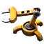
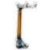
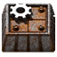

First stage
The different parts
Introduction:
Factorio, developed by Wube Software, is a complex and immersive real-time strategy game that challenges players with the task of building and managing efficient factories in an alien world. In the learning mechanics stage, players embark on a journey to understand the inner workings of crucial elements such as inserters, belts, power systems, and assembling machines. This article delves into the intricacies of this learning stage in Factorio.
Understanding Inserters
Inserters play a pivotal role in Factorio, serving as the mechanical hands that transfer items between entities. In the learning mechanics stage, players grapple with the nuances of inserters, exploring how these devices can be strategically placed to optimize production lines. From handling raw resources to feeding assembling machines, mastering the art of inserter manipulation is a key aspect of progressing in Factorio.
Belt Logistics:
Belts act as the veins of a player's factory, facilitating the seamless transportation of goods from one point to another. During the learning stage, players experiment with different belt setups, learning how to organize and balance the flow of resources. Understanding the intricacies of belt logistics is crucial for preventing bottlenecks and ensuring a steady supply of materials to various production units.

Power Systems:
Factorio introduces a dynamic power system where players must generate and distribute electricity to power their factories. In the learning mechanics stage, players grapple with the challenges of designing efficient power grids. They explore various energy sources, such as steam engines and solar panels, and learn to balance energy production with the increasing demands of their growing industrial empire.
Assembling Machines:
Assembling machines form the heart of automation in Factorio, transforming raw materials into sophisticated products. During this stage, players learn how to design intricate production lines, optimize crafting ratios, and automate complex manufacturing processes. Understanding the capabilities of assembling machines is crucial for achieving high levels of efficiency in resource utilization.
Challenges and Achievements
Factorio's learning mechanics stage is characterized by challenges and triumphs. Players may encounter hurdles such as inefficient setups, production bottlenecks, or power shortages. Overcoming these challenges is part of the learning process. Additionally, the game introduces achievements that encourage players to explore advanced concepts and experiment with different strategies, providing a sense of accomplishment as they master the mechanics.